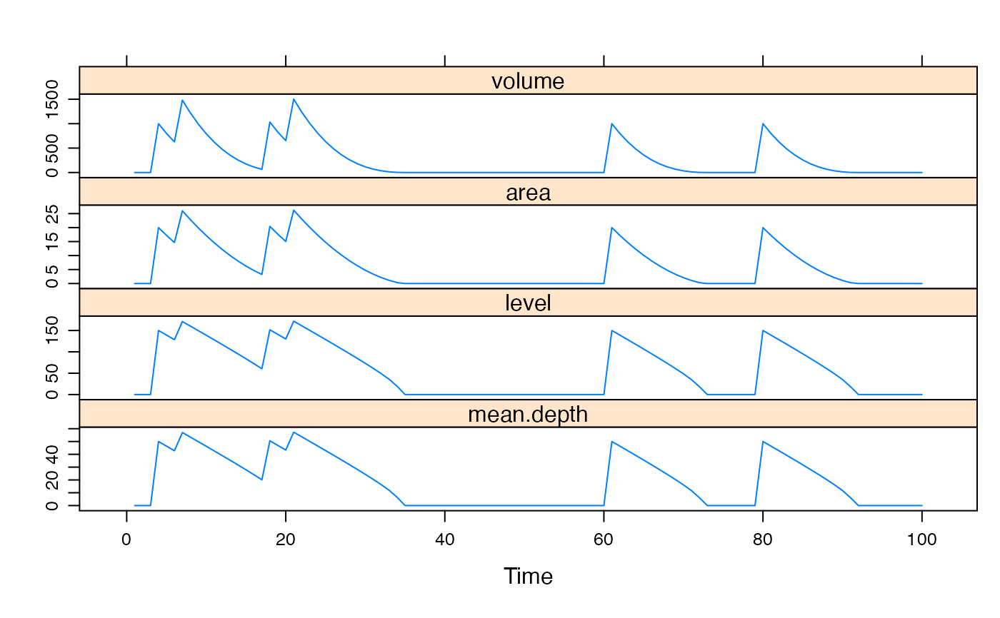

Model flood area / duration / depth in wetlands.
swimp(
flow.ML,
thresh = 0,
alpha,
beta,
E.mm = 0,
P.mm = 0,
Ksat.mm.day = 0,
e = 0.2,
g = 140,
Hmax = 2000,
Amax = 10000,
porosity = 0.2,
M_0 = Hmax * porosity,
V_0 = 0,
drainage = 0,
drainLevel = 0
)inflow or streamflow in ML per timestep.
a threshold for flow.ML, such that only flow above this
value enters the wetland.
parameters defining the shape of the wetland. See
poweroid.
potential evapo-transpiration and precipitation in mm per timestep.
Saturated hydraulic conductivity in mm per timestep, relative to a reference pressure of 10cm. If this is 0, the wetland surface water is isolated from the surrounding water table, i.e. there is no infiltration nor discharge.
Placeholder
stress threshold in terms of Catchment Moisture Deficit (mm), as in
the IHACRES CMD model, where g = f * d. See
IHACRES.CMD.model.
Placeholder
Placeholder
effective porosity of the soil.
initial value of Catchment Moisture Deficit, mm.
initial volume of surface water in wetland, ML.
drainage rate as a proportion of volume above
drainLevel per timestep.
water level (millimetres from base) above which drainage occurs.
a zoo object (time series object).
...
## assume Q is inflow in ML/day
set.seed(1)
Q <- rpois(100, lambda = 0.1) * 1000
## assume depth distribution follows a cone, i.e. beta = 1
## estimate alpha given known area vs volume
## lets say a volume of 1000 ML corresponds to area 20 km^2
alpha <- poweroid(V = 1000, A = 20, beta = 1)$alpha
flood <- swimp(Q, alpha = alpha, beta = 1, E.mm = 10)
head(flood, 20)
#> volume area level mean.depth
#> 1 0.00000 0.000000 0.00000 0.00000
#> 2 0.00000 0.000000 0.00000 0.00000
#> 3 0.00000 0.000000 0.00000 0.00000
#> 4 1000.00000 20.000000 150.00000 50.00000
#> 5 800.00000 17.235478 139.24767 46.41589
#> 6 627.64522 14.661311 128.42887 42.80962
#> 7 1481.03211 25.986013 170.98030 56.99343
#> 8 1221.17199 22.849738 160.33077 53.44359
#> 9 992.67461 19.902208 149.63283 49.87761
#> 10 793.65252 17.144188 138.87841 46.29280
#> 11 622.21064 14.576557 128.05712 42.68571
#> 12 476.44507 12.200339 117.15537 39.05179
#> 13 354.44168 10.016743 106.15477 35.38492
#> 14 254.27426 8.027216 95.02956 31.67652
#> 15 174.00210 6.233515 83.74189 27.91396
#> 16 111.66695 4.637812 72.23253 24.07751
#> 17 65.28884 3.242818 60.40009 20.13336
#> 18 1032.86065 20.435777 151.62536 50.54179
#> 19 828.50289 17.642468 140.88214 46.96071
#> 20 652.07820 15.039375 130.07420 43.35807
xyplot(flood)
